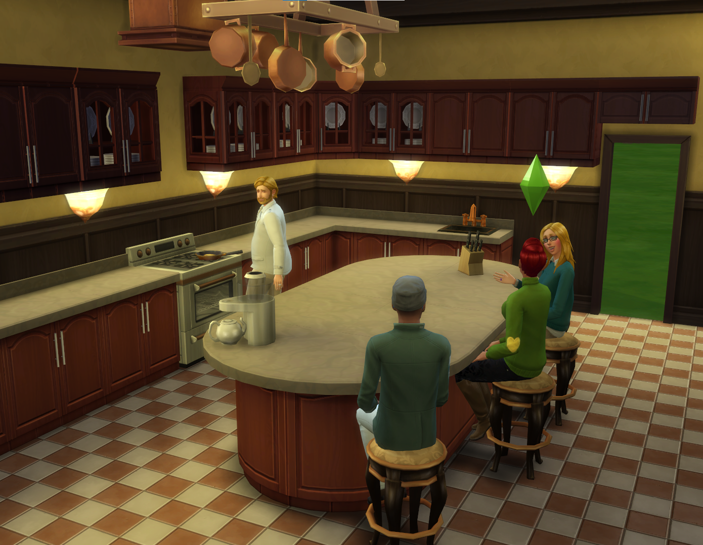
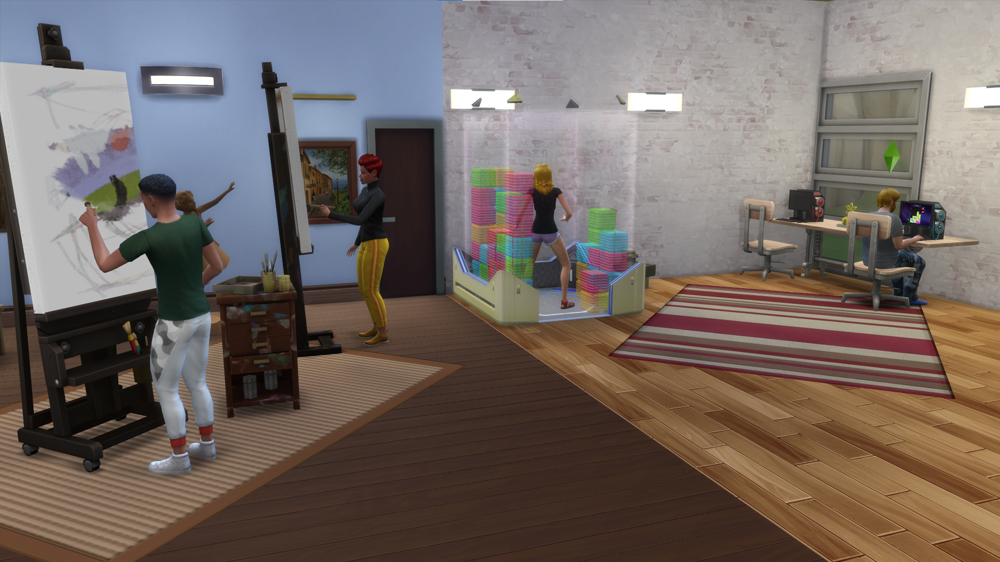
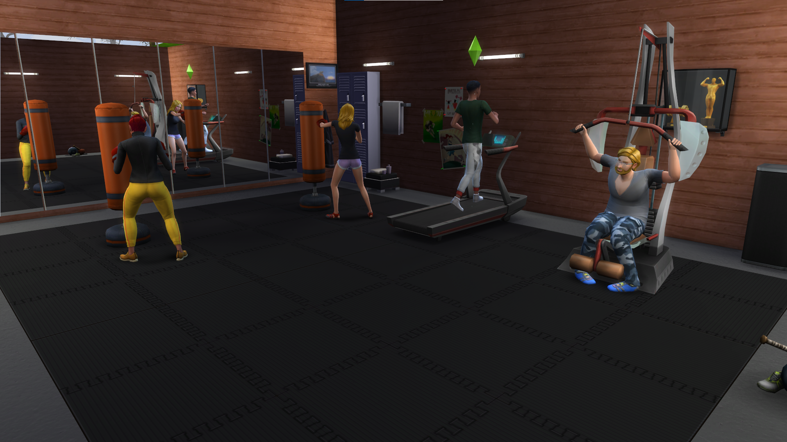
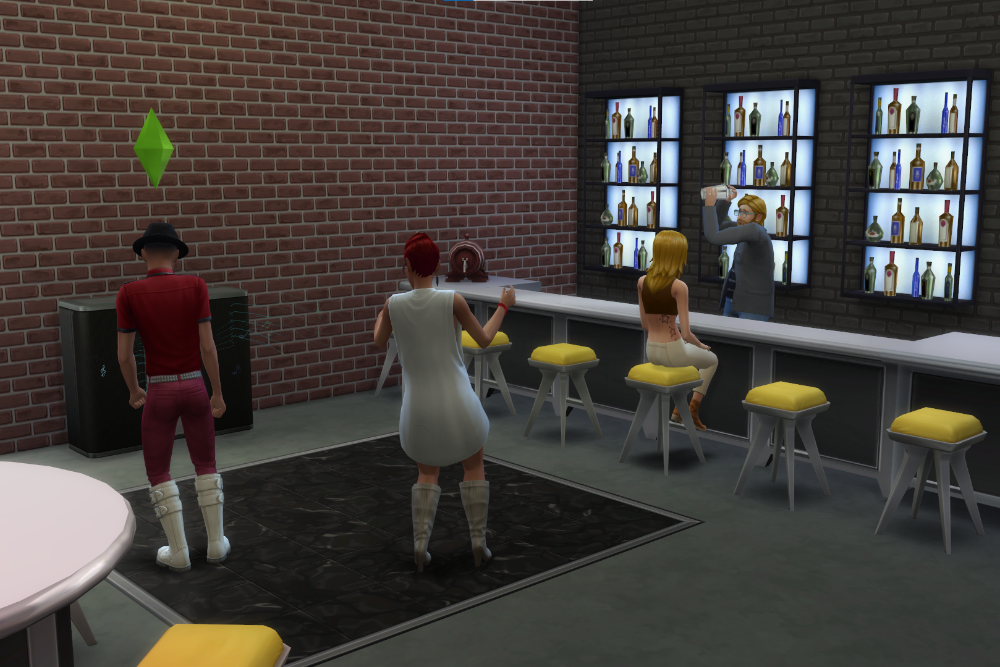

In The Sims 4, there are many skills that a Sim can learn. Some are specific to game packs or expansion packs. In the base game, there are a lot of skills the Sims can learn, those skills are Cooking, Charisma, Comedy, Fishing, Fitness, Gardening, Gourmet Cooking, Guitar, Handiness, Logic, Mischief, Mixology, Painting, Photography, Piano, Programming, Rocket Science, Video Gaming, Violin, and Writing. These skills all go up to level 10. Each level your Sim will gain a new thing like an item or a new action. Some of the actions are used on other Sims and other actions will be on items. Most of the expansion packs and game packs will bring in at least one new skill. The Sims 4 Get Famous Expansion Pack adds Acting and Media Production skills to the game. The Sims 4 Get to Work Expansion Pack adds Baking and Retail skills. The Sims 4 Get Together adds Dancing and DJ skills. The Sims 4 Discover University adds Research & Debate and Robotics. The Sims 4 Eco Lifestyle adds Fabrication and Juice Fizzling skills. The Sims 4 City Living adds the Singing skill. The Sims 4 Seasons adds Flower Arranging and Skating skills (Skating is a hidden skill). The Sims 4 Cats & Dogs adds Pet Training and Vet skill. The Sims 4 Snowy Escape adds Rock Climbing, Skiing, and Snow Boarding skills. Some of the Game Packs also bring in their own skills and some careers. For most careers, one of the tasks you have to do to get promoted is to level up specific skills. Each skill has multiple ways of leveling up.
   